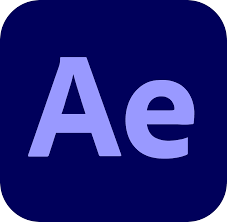

Tech Stack

The Problems
Speed Misjudgment and Safety Risks: Skiers often underestimate their speed, leading to an increased risk of accidents in designated slow zones where speed limits are crucial for safety.
Inadequate Warning Systems: Traditional signage in ski resorts often fails due to environmental factors (e.g., poor visibility, snowfall) and limited reaction times for skiers, resulting in overlooked or ineffective warnings.
Key Insights
User Interface Effectiveness: The study found that curved, color-changing speed icons and triangular warning shapes were most effective, enhancing skiers' awareness and adherence to speed limits in VR simulations.
User Preferences: Participants preferred icons with clear visibility and unobtrusive placements, like floating warning icons that did not obstruct the view, ensuring a balance between alerting the user and preserving the immersive experience.
Potential of AR in Ski Safety: AR provides a more adaptable and engaging way to convey real-time warnings and speed information, showing promise for reducing accidents in slow-speed zones.
Goal
The research aims to enhance skier safety by designing an augmented reality (AR) user interface that provides real-time, easily visible speed and warning alerts, thereby helping skiers maintain safe speeds in slow zones. This project intends to bridge the gap between traditional warning signs and AR technology, using virtual reality (VR) for initial testing to validate the interface’s effectiveness before potential real-world implementation.
Research Paper
Abstract: This paper describes the testing of an augmented reality interface in a virtual reality environment designed to improve skier safety by providing real-time visual alerts for slow zones. By integrating this technology, my research aims to enhance skiing enjoyment while reducing the risk of accidents and injuries in these critical areas. I employed various methods to evaluate the readability, usability, and interactivity of the interface, including assessments of static and dynamic displays, such as animated dashboards, the use of colored icons, and the effectiveness of spatial positioning of interface elements. The findings offer insights into how this immersive feedback mechanism can decrease the incidence of slow zone accidents and enhance the overall skiing experience. This research bridges the gap between technological innovation and practical application, significantly contributing to the resolution of key safety challenges in winter sports.
If you would like to read this paper, please contact me.